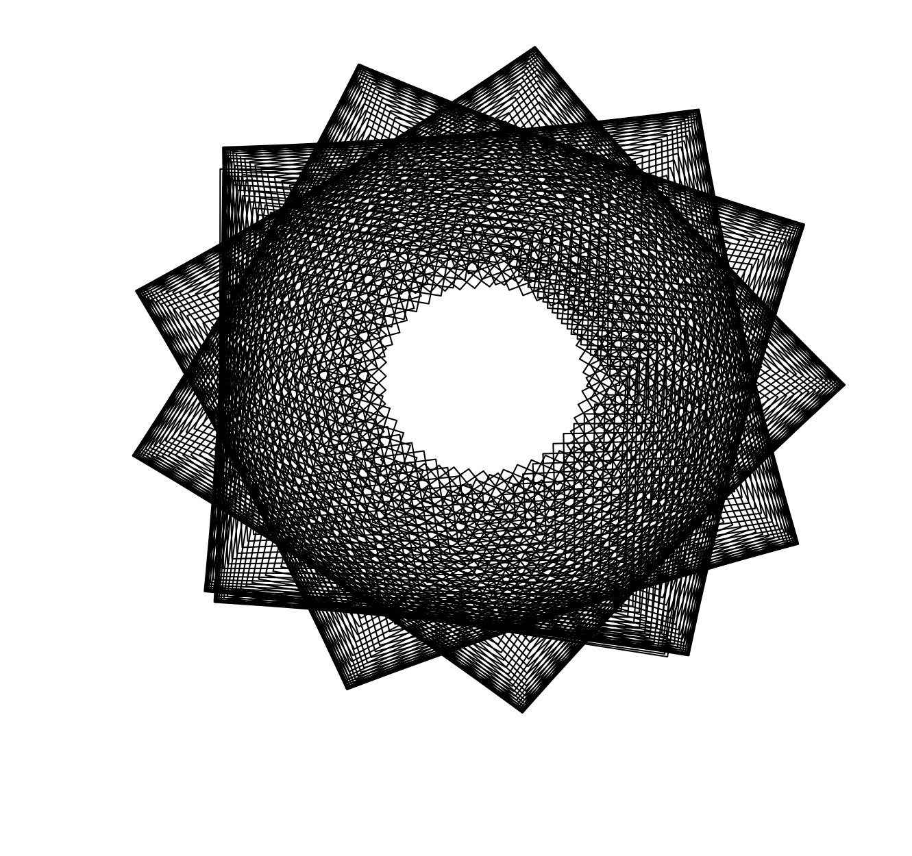
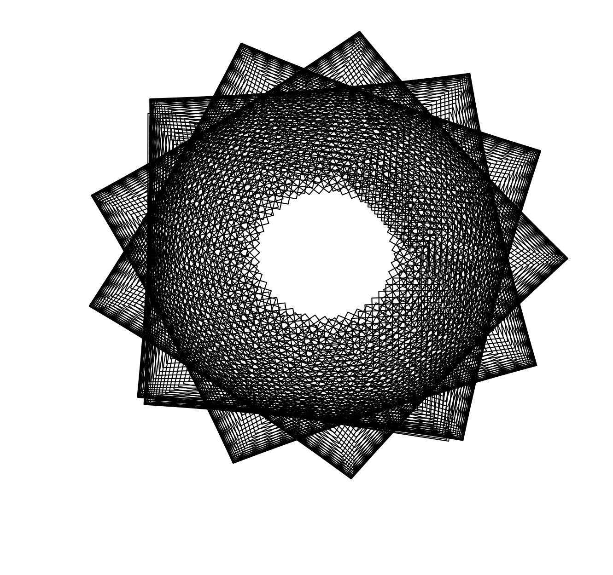

Ice cream is ice cream; as water is water. Though not all ice cream is the same!
| Rank | Flavor |
|---|---|
| 1 | Vanilla |
| 2 | Strawberry |
| 3 | Chocolate |
| 4 | Cookies and Cream |
| 5 | Mint Chocolate Chip |
| 6 | Mint |
Do you like ice cream?!
 

There is cool ice cream but also cool code!
#!/bin/bash
function centerIt {
lines=$(tput lines);cols=$(tput cols);tput cup $((lines/2)) $(((cols-${#1})/2))
}
function centerPrintIt {
centerIt "$1"
printf "$1"
}
clear
centerPrintIt '_____Auto commiting to github script; autocommits pwd_____\n\n'
sleep 2; tput clear
printf 'Fetching and Pulling... \nFetch:\n';git fetch
printf '\nPulling:\n';git pull
printf '%b\n' 'GitHub Auto Commit from pwd:' '\033[95m' $(pwd) '\033[0m'
git add .
printf 'Message to commit with: \n'
read commitMessage
clear
printf "Commit with this message?"
printf "\n\033[95m$commitMessage\033[0m\n"
read -n1 -p '(y/n)' messageConfirmation
printf '\n'
if ( [[ "$messageConfirmation" = 'y' ]] );then
git commit -m "$commitMessage"
git push
printf '\nSuccess!?'
else
printf '\nConformation Failed, Exiting'
fi
printf '\n\033[93m Have a Nice Day!\033[0m\n'
exit 1